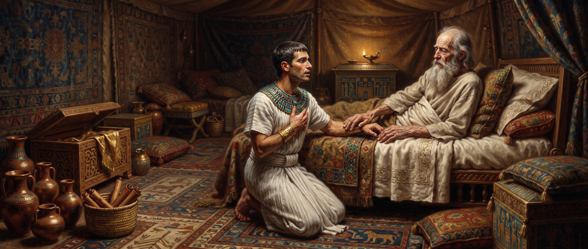

Genesis
Chapter Forty-Seven
King James Version
Then Joseph came and told Pharaoh, and said, My father and my brethren, and their flocks, and their herds, and all that they have, are come out of the land of Canaan; and, behold, they are in the land of Goshen. 2And he took some of his brethren, even five men, and presented them unto Pharaoh. 3And Pharaoh said unto his brethren, What is your occupation? And they said unto Pharaoh, Thy servants are shepherds, both we, and also our fathers. 4They said moreover unto Pharaoh, For to sojourn in the land are we come; for thy servants have no pasture for their flocks; for the famine is sore in the land of Canaan: now therefore, we pray thee, let thy servants dwell in the land of Goshen. 5And Pharaoh spake unto Joseph, saying, Thy father and thy brethren are come unto thee: 6The land of Egypt is before thee; in the best of the land make thy father and brethren to dwell; in the land of Goshen let them dwell: and if thou knowest any men of activity among them, then make them rulers over my cattle.
7And Joseph brought in Jacob his father, and set him before Pharaoh: and Jacob blessed Pharaoh. 8And Pharaoh said unto Jacob, How old art thou? 9And Jacob said unto Pharaoh, The days of the years of my pilgrimage are an hundred and thirty years: few and evil have the days of the years of my life been, and have not attained unto the days of the years of the life of my fathers in the days of their pilgrimage. 10And Jacob blessed Pharaoh, and went out from before Pharaoh.
11And Joseph placed his father and his brethren, and gave them a possession in the land of Egypt, in the best of the land, in the land of Rameses, as Pharaoh had commanded. 12And Joseph nourished his father, and his brethren, and all his father's household, with bread, according to their families.
13And there was no bread in all the land; for the famine was very sore, so that the land of Egypt and all the land of Canaan fainted by reason of the famine. 14And Joseph gathered up all the money that was found in the land of Egypt, and in the land of Canaan, for the corn which they bought: and Joseph brought the money into Pharaoh's house. 15And when money failed in the land of Egypt, and in the land of Canaan, all the Egyptians came unto Joseph, and said, Give us bread: for why should we die in thy presence? for the money faileth. 16And Joseph said, Give your cattle; and I will give you for your cattle, if money fail. 17And they brought their cattle unto Joseph: and Joseph gave them bread in exchange for horses, and for the flocks, and for the cattle of the herds, and for the asses: and he fed them with bread for all their cattle for that year.
18When that year was ended, they came unto him the second year, and said unto him, We will not hide it from my lord, how that our money is spent; my lord also hath our herds of cattle; there is not ought left in the sight of my lord, but our bodies, and our lands: 19Wherefore shall we die before thine eyes, both we and our land? buy us and our land for bread, and we and our land will be servants unto Pharaoh: and give us seed, that we may live, and not die, that the land be not desolate. 20And Joseph bought all the land of Egypt for Pharaoh; for the Egyptians sold every man his field, because the famine prevailed over them: so the land became Pharaoh's. 21And as for the people, he removed them to cities from one end of the borders of Egypt even to the other end thereof. 22Only the land of the priests bought he not; for the priests had a portion assigned them of Pharaoh, and did eat their portion which Pharaoh gave them: wherefore they sold not their lands.
23Then Joseph said unto the people, Behold, I have bought you this day and your land for Pharaoh: lo, here is seed for you, and ye shall sow the land. 24And it shall come to pass in the increase, that ye shall give the fifth part unto Pharaoh, and four parts shall be your own, for seed of the field, and for your food, and for them of your households, and for food for your little ones. 25And they said, Thou hast saved our lives: let us find grace in the sight of my lord, and we will be Pharaoh's servants. 26And Joseph made it a law over the land of Egypt unto this day, that Pharaoh should have the fifth part; except the land of the priests only, which became not Pharaoh's.
27And Israel dwelt in the land of Egypt, in the country of Goshen; and they had possessions therein, and grew, and multiplied exceedingly. 28And Jacob lived in the land of Egypt seventeen years: so the whole age of Jacob was an hundred forty and seven years.
29And the time drew nigh that Israel must die: and he called his son Joseph, and said unto him, If now I have found grace in thy sight, put, I pray thee, thy hand under my thigh, and deal kindly and truly with me; bury me not, I pray thee, in Egypt: 30But I will lie with my fathers, and thou shalt carry me out of Egypt, and bury me in their burying place. And he said, I will do as thou hast said.
31And he said, Swear unto me. And he sware unto him. And Israel bowed himself upon the bed's head.
7And Joseph brought in Jacob his father, and set him before Pharaoh: and Jacob blessed Pharaoh. 8And Pharaoh said unto Jacob, How old art thou? 9And Jacob said unto Pharaoh, The days of the years of my pilgrimage are an hundred and thirty years: few and evil have the days of the years of my life been, and have not attained unto the days of the years of the life of my fathers in the days of their pilgrimage. 10And Jacob blessed Pharaoh, and went out from before Pharaoh.
11And Joseph placed his father and his brethren, and gave them a possession in the land of Egypt, in the best of the land, in the land of Rameses, as Pharaoh had commanded. 12And Joseph nourished his father, and his brethren, and all his father's household, with bread, according to their families.
13And there was no bread in all the land; for the famine was very sore, so that the land of Egypt and all the land of Canaan fainted by reason of the famine. 14And Joseph gathered up all the money that was found in the land of Egypt, and in the land of Canaan, for the corn which they bought: and Joseph brought the money into Pharaoh's house. 15And when money failed in the land of Egypt, and in the land of Canaan, all the Egyptians came unto Joseph, and said, Give us bread: for why should we die in thy presence? for the money faileth. 16And Joseph said, Give your cattle; and I will give you for your cattle, if money fail. 17And they brought their cattle unto Joseph: and Joseph gave them bread in exchange for horses, and for the flocks, and for the cattle of the herds, and for the asses: and he fed them with bread for all their cattle for that year.
18When that year was ended, they came unto him the second year, and said unto him, We will not hide it from my lord, how that our money is spent; my lord also hath our herds of cattle; there is not ought left in the sight of my lord, but our bodies, and our lands: 19Wherefore shall we die before thine eyes, both we and our land? buy us and our land for bread, and we and our land will be servants unto Pharaoh: and give us seed, that we may live, and not die, that the land be not desolate. 20And Joseph bought all the land of Egypt for Pharaoh; for the Egyptians sold every man his field, because the famine prevailed over them: so the land became Pharaoh's. 21And as for the people, he removed them to cities from one end of the borders of Egypt even to the other end thereof. 22Only the land of the priests bought he not; for the priests had a portion assigned them of Pharaoh, and did eat their portion which Pharaoh gave them: wherefore they sold not their lands.
23Then Joseph said unto the people, Behold, I have bought you this day and your land for Pharaoh: lo, here is seed for you, and ye shall sow the land. 24And it shall come to pass in the increase, that ye shall give the fifth part unto Pharaoh, and four parts shall be your own, for seed of the field, and for your food, and for them of your households, and for food for your little ones. 25And they said, Thou hast saved our lives: let us find grace in the sight of my lord, and we will be Pharaoh's servants. 26And Joseph made it a law over the land of Egypt unto this day, that Pharaoh should have the fifth part; except the land of the priests only, which became not Pharaoh's.
27And Israel dwelt in the land of Egypt, in the country of Goshen; and they had possessions therein, and grew, and multiplied exceedingly. 28And Jacob lived in the land of Egypt seventeen years: so the whole age of Jacob was an hundred forty and seven years.
29And the time drew nigh that Israel must die: and he called his son Joseph, and said unto him, If now I have found grace in thy sight, put, I pray thee, thy hand under my thigh, and deal kindly and truly with me; bury me not, I pray thee, in Egypt: 30But I will lie with my fathers, and thou shalt carry me out of Egypt, and bury me in their burying place. And he said, I will do as thou hast said.

Study: A Pilgrim Before a King
The brothers' interview with Pharaoh plays out exactly as Joseph coached them back in chapter 46, and Goshen is secured without incident. What happens next is a genuine reversal worth sitting with: Jacob himself is brought before Pharaoh, and it's the old shepherd who blesses the king — not the other way around. An aged herdsman, entirely without political power, standing in the most important court in the world, and it's his hand raised over Pharaoh's head.
Pharaoh's question is simple — "How old art thou?" — and Jacob's answer is startlingly honest for a man standing at the height of his family's fortunes. "The days of the years of my pilgrimage are an hundred and thirty years: few and evil have the days of the years of my life been." One reading catches something real in that self-assessment.
“
“Old Jacob, in dying, standing before Pharaoh, he said, 'I have been so-many years in my pilgrimage.' What was he? He begin to come to himself. The little fellow had done so bad. He knew that he was only a pilgrim here.”
— William Branham, “Israel and the Church 1” (53-0325)
This is the same man who just experienced the most joyful reunion of his life, secured in the best land in Egypt, surrounded by grandchildren he thought he'd never meet. And still, when asked to sum up his life, he doesn't reach for triumph. He names it honestly — hard, and shorter than his fathers'. Rachel, the lost years mourning Joseph, Dinah, Simeon's imprisonment, Reuben's failure, all of it apparently still real to him even now.
The chapter then shifts entirely into something colder and more administrative. As the famine grinds on, the Egyptians surrender everything they have in stages just to survive — their money first, then their livestock, and finally, with nothing left, their land and their own freedom, becoming Pharaoh's permanent servants under a standing twenty percent tax. It's worth reading this plainly rather than rushing past it: whatever a modern reader makes of that outcome, the text doesn't record it as coerced or resented. The Egyptians themselves say, "Thou hast saved our lives... we will be Pharaoh's servants," and the one group specifically spared this fate is the priesthood, whose land Joseph never touches at all.
A note on sourcing: beyond the pilgrimage quote above, I found nothing addressing this chapter's economic section or its closing scene directly. What's written here traces the text on its own terms.
Seventeen comfortable years pass in Egypt before the chapter's final scene, and even after all that time, Jacob's conviction hasn't shifted at all. Dying, he requires the same solemn oath-gesture Abraham's own servant once used back in chapter 24 — a hand placed under the thigh — to bind Joseph to a single, non-negotiable request: not to be buried in Egypt, whatever comfort and honor it's given his family, but carried back to Canaan, to lie with his fathers. Seventeen years of prosperity in the best land Egypt has to offer never once became home.